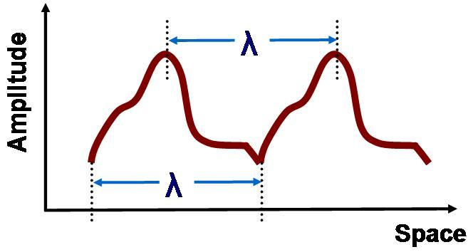
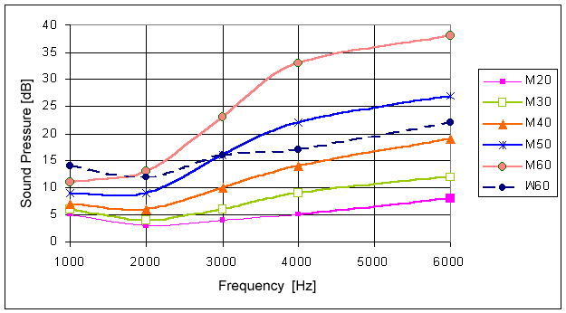

WebAudio
Carlos León
cleon@ucm.es
Sonido en un computador
El sonido
De Wikipedia:
es cualquier fenómeno que involucre la propagación de ondas mecánicas (sean audibles o no), generalmente a través de un fluido (u otro medio elástico) que esté generando el movimiento vibratorio de un cuerpo
Características del sonido
Lo que llamamos sonido es el resultado de:
- la vibración del aire, que llega a nuestro oreja (esto es una onda mecánica)
- La oreja, gracias a su forma, hace que la onda rebote y se refleje en la dirección del conducto auditivo
- Así, la onda llega al tímpano, que vibra
- La vibración es transmitida al nervio auditivo.
- El nervio llega a nuestro cerebro
- Ocurren muchas cosas (muchas de las cuáles aún ignoramos)
- Percibimos, conscientemente, el sonido
Caracteristicas de una onda
La longitud de onda (simbolizada por λ) es la distancia entre dos crestas o valles seguidos.
El periodo T es el tiempo requerido para que el movimiento de oscilación de la onda describa un ciclo completo

Figura 1: La amplitud de la onda es la altura de la cresta
La frecuencia f es el número de ciclos completos transcurridos en una unidad de tiempo
f = 1 / T
Hercio (Hz) es el número de veces que se repite una onda por segundo
100 kHzs = 100.000 veces por segundo
¿Cómo producir sonido?
Para reproducir sonido es necesario generar ondas que se propaguen a través de un fluido
Para hacer esto en un dispositivo moderno, tenemos que enviar señales a un altavoz
Para comunicarnos con el altavoz, usamos generalmente un chip de audio
En general:
- creamos la representación de una onda compleja (muchos números reales)
- le mandamos esta representación digital al chip
- el chip la convierte en una señal electrónica analógica
- le señal eléctrica hace que el altavoz "mueva" el aire, produciendo el sonido
¿Y qué tiene que ver eso con un MP3?
Un archivo de audio en formato de onda (hay otros diferentes, como MIDI) tiene esa representación numérica/digital de la onda compleja que define el sonido
El reproductor de audio puede tener que preprocesar el audio que hay en el archivo. Por ejemplo, para descomprimirlo (como en el caso de MP3)
Después, se comunica con el chip de audio, "entregándole" (a través de varias capas software y hardware) la música en onda "bruta"
Hay que tener en cuenta que el sonido puede ocupar mucho espacio
Cuanta más fidelidad queramos reproducir, más precisión (resolución) necesitaremos almacenar
Es decir, más números
Cuando la precisión es muy grande, el archivo de audio puede tener un tamaño de varias decenas de megas para una canción de 2 o 3 minutos
Esto ocurre con formatos como WAV o AIFF (sin compresión)
Por tanto, usamos compresión
Cuando usamos compresión, tenemos dos familias de formatos:
- formatos sin pérdida: el audio, al comprimir y descomprimir, no pierde datos (FLAC)
- formatos con pérdida: el audio, al ser comprimido, pierde fidelidad. Pero, generalmente, esta pérdida no se nota por el oyente, y la compresión es mucho mayor (MP3)
El oído humano (en general) distingue frecuencias entre 20 Hz y 20 KHz
La voz masculina ronda los 100-200 Hz, y la femenina los 150-300 Hz (la infantil es algo más aguda)
media audible 2KHz - 4 KHz) 
Ejemplo tono no audible para adultos
Comprimir consiste en eliminar las frecuencias no audibles, aunque siempre nos llevamos por delante algo que podríamos oír
Con suerte, eso que eliminamos no será muy relevante
Música y sonido
Toda la música es sonido
En general, asumimos que la música es sonido con ciertas propiedades (armonía, estructura…)
En términos técnicos, es muy normal representar la música y el sonido de maneras diferentes
Generalmente, la música en un videojuego se reproduce de forma continua como elemento decorativo
Los sonidos se lanzan y se espera que estén perfectamente sincronizados con la acción que los lanzan
Es muy normal que, como recursos, los sonidos estén en archivos de audio en formatos sin compresión y sean cortos
La música, normalmente, está codificada como pistas, de la misma forma que solemos escucharla en reproductores modernos (MP3, OGG)
Hoy en día las tecnologías web permiten reproducir audio desde el navegador
Elemento <audio>
<audio controls>
<source src="https://upload.wikimedia.org/wikipedia/commons/4/45/Dryoscopus_cubla_okavangensis%2C_roepe%2C_27_s%2C_voorstedelike_Pretoria%2C_b.mp3" type="audio/mp3">
Tu navegador no soporta audio
</audio>
Web Audio
Web Audio es una forma de reproducir audio en el navegador a bajo nivel
Con Web Audio, podemos crear nuestra propia onda de sonido:
// Creamos un "contexto"
const context = new AudioContext();
// Creamos un oscilador (genera una onda sencilla)
const oscillator = context.createOscillator();
// Conectamos el oscilador con los altavoces
oscillator.connect(context.destination);
// Empezamos la reproducción
oscillator.start(context.currentTime);
// Finalizamos la reproducción 5 segundos después
oscillator.stop(context.currentTime + 5);
Web Audio no reemplaza al elemento <audio>
Para reproducir una pista de audio en un archivo estándar, usar una etiqueta <audio> es generalmente mucho más razonable
Web Audio está diseñada de forma que, con la API, construimos nodos

Figura 2: Ejemplo de nodos Web Audio
La información de la "onda" se enruta entre los nodos, de forma que encadenamos procesos
Es muy análogo a un montaje electrónico en el que vamos modificando la onda
Figura 3: Conectando nodos Web Audio
const context = new AudioContext();
const oscillator = context.createOscillator();
oscillator.start(context.currentTime);
oscillator.stop(context.currentTime + 5);
// Creamos un nodo nuevo de ganancia
var gainNode = context.createGain();
// Conectamos la salida del oscilador al nodo de ganancia
oscillator.connect(gainNode);
// Conectamos el nodo de ganancia a la salida
gainNode.connect(context.destination);
// Cambiamos el volumen
gainNode.gain.value = 0.5;